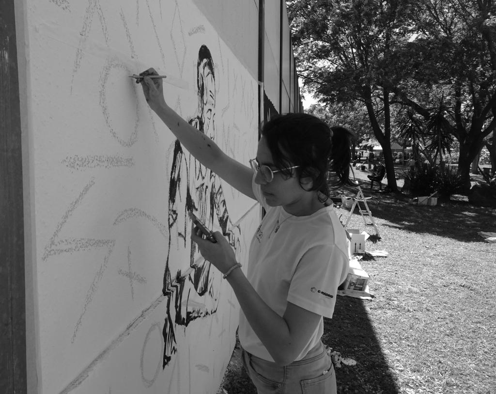

Soy Mer Reina, ilustradora andaluza.
Mi trabajo se centra fundamentalmente en piezas en digital, aunque me atrae en general cualquier material o técnica con la que pueda dibujar. Mis piezas son figurativas y expresivas, con mucho blanco y negro y trazos intensos.
Detrás de cada ilustración hay un cachito de mis entrañas, porque solo nacen cuando tengo algo que decir o que gritar. También hay un trocito de mi tierra, de mis tradiciones, de lo cotidiano que a veces pasa desapercibido. Andalucía no es solo el escenario habitual: es raíz, fuerza y voz en mi obra.